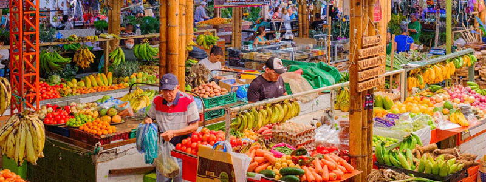
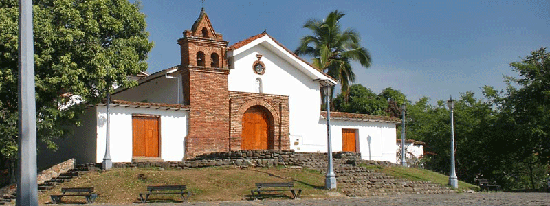

Pa' comer sabroso
Filtrá aquí mismo por el nombre del restaurante, la especialidad que querás probar y la zona de Cali donde estés ubicado.
ver másFiltrá aquí mismo por el nombre del restaurante, la especialidad que querás probar y la zona de Cali donde estés ubicado.
ver más
Aquí se come de verdad: sancocho en leña, cazuelas del Pacífico, champús helado y empanaditas vallunas.
ver más
El parche clásico: calles empedradas, casas coloniales, café de origen y la mejor vista desde la loma.
ver más